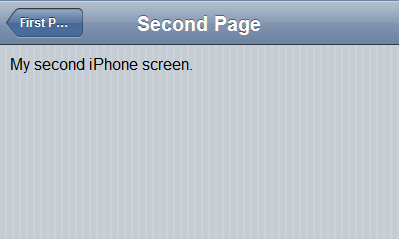
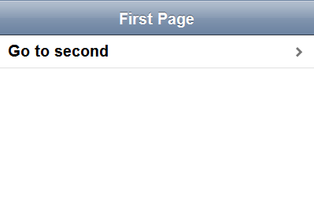

As Joe Hewitt notes in the iUI introductory blog post, iUI is intended to convert "ordinary standards-based HTML" into a polished UI that looks like a native iPhone app. The first thing to learn about iUI is what "ordinary HTML" it supports.
In order to start playing with iUI, you first need to create a basic HTML file that pulls in iUI's CSS and Javascript, plus a couple of iPhone-specific meta tags. Here's what it looks like (with the iUI repository in an "iui-tip" subfolder):
Everything else will be done inside the body tag. The basic type of view in iUI is the panel-type view, which must be a top-level element (i.e. directly under the body element) and must either be a ul element or a div or form with a class of "panel". Let's start with a couple of divs to scroll between and a toolbar (be sure to set selected="true" on the first one to display it by default or you won't see anything):
This should end up looking something like this:

Of course, it doesn't do you a whole lot of good to have two screens without a way to navigate between them, so let's add a link and a couple of IDs:
Now you should have a link on your first screen that does a smooth sideways animation to the second screen, which should look like this:
While this technically works, the blue-styled link doesn't exactly look like a native iPhone app, nor does it comply with the iPhone Human Interface Guidelines. For that, we should put the link in a table view. In iUI, table views are created with an unordered list (ul) like this:
Now it should look like this:
Congratulations! You've just created your first, working iUI application!